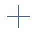
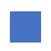
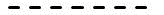
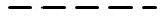

SpreadJS enables users to create powerful charts by allowing them to configure data markers using different types of shapes and lines. Data markers are used to highlight data points in charts. While working with line charts and radar charts, you can change the appearance of the data markers to distinguish a series and enhance data visualization.
The following chart types support configuration of data markers in the worksheet.
- Line Chart with Markers
- 100% Stacked Line Chart with Markers
- Stacked Line Chart with Markers
- Scatter Chart with Straight Lines and Markers
- Scatter Chart with Smooth Lines and Markers
- Radar Chart with Markers
The SymbolShape enumeration offers the following types of shapes while configuring data markers in charts.
| SymbolShape | Value | Image |
|---|---|---|
| circle | 0 | |
| dash | 1 | |
| diamond | 2 | |
| dot | 3 | |
| none | 4 | none |
| plus | 6 |  |
| square | 7 |  |
| star | 8 | |
| triangle | 9 | |
| x | 10 |
The LineType enumeration offers the following line types while configuring data markers in charts.
| LineType | Value | Image |
|---|---|---|
| solid | 0 | |
| dot | 1 | |
| dash | 2 |  |
| lgDash | 3 |  |
| dashDot | 4 | |
| lgDashDot | 5 | |
lgDashDotDot |
6 | |
| sysDash | 7 | |
| sysDot | 8 |  |
| sysDashDot | 9 | |
| sysDashDotDot | 10 |
Example
For example, let's say you're working with a business application that shows the usage of different web browsers using a line chart. Now, you may want to highlight the color and shape of an individual point in the chart or modify all the data points in a series without altering other data in the chart. Configuring data markers of different colors and shapes will enable your chart to stand out from the rest and will make it easy for business analysts to manipulate and highlight crucial information quickly and effectively.
The following image depicts a Line Chart with markers. Each point on the line is a data marker that represents a single data value located in the cell.

Using Code
Refer to the following code in order to configure data markers in a line chart.
| JavaScript |
Copy Code
|
|---|---|
|
<script> { { [ { { |
|